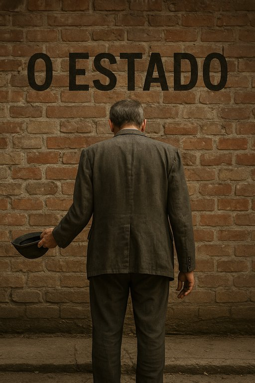

Publicado em 2025-06-30 12:03:14
O mais recente retrato da pobreza em Portugal revela um país onde a esperança parece andar de cócoras. Segundo os dados da PORDATA, em 2022, a taxa de intensidade de pobreza atingiu os 25,6%, face aos 21,7% de 2021 – o maior salto desde 2012.
Mas o que significa isto em miúdos (literalmente, para muitos miúdos que jantam só pão com manteiga)? Que metade das pessoas que já são consideradas pobres, estão a viver com menos 25,6% do rendimento mínimo que define a linha da pobreza. É como estar no fundo do poço... e alguém ainda desatar a tirar-lhe a corda.
Enquanto isto, os magos da retórica no Parlamento ainda falam em crescimento económico, inovação, turismo e — pasme-se — em descidas de impostos. Mas não se preocupem, diz o poder instituído: “Portugal está no bom caminho!” — um caminho tão íngreme que até a dignidade escorrega.
As estatísticas não choram. Mas cada número representa uma família a contar trocos para o pão, uma criança sem material escolar novo, um idoso a escolher entre a farmácia e a refeição quente. E o Estado? Aponta gráficos, distribui PowerPoints e, com sorte, oferece um cabaz de Natal... em março.
Será esta a nova justiça social: empobrecer com equidade? A linha da pobreza, outrora um limiar a combater, tornou-se o novo patamar de referência.
Não há reforma digna sem justiça social. Não há futuro com jovens pobres de oportunidades. E não há desculpa possível quando os dados gritam o que os governantes fingem não ouvir.
Portugal, país de poetas e navegadores, afunda-se agora num mar de estatísticas ignoradas, enquanto canta fados de resignação à mesa do Orçamento.
Artigo de Augustus Veritas